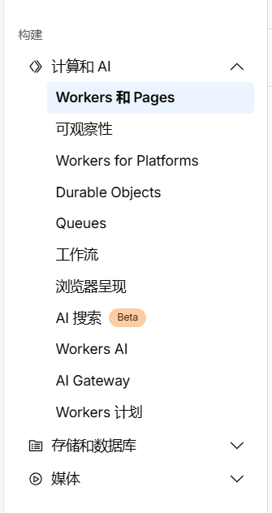
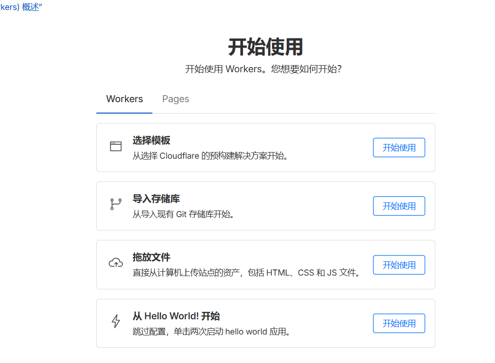
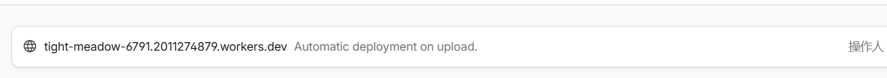

5分钟 修改Gitalk代理地址，解决无法登录问题
最近心血来潮，也不算吧，一直都有这个想法，只是一直都未付诸行动——搭建个人博客。
应该暂时还没有经济收入，所以放弃了自建动态个人博客网站，毕竟不仅要花费时间来维护，还要花点小钱，没啥必要~~，所以采用了用使用静态站点生成器（如Hexo）搭建博客。
但在搭建过程中还是遇到了诸多问题，故记之~~
问题一：我在使用gitalk来搭建博客评论组件的时候，出现了gitalk network error的提示，忘记保存图片了—-
出现错误的原因：是 “Gitalk 向 GitHub OAuth 接口发送请求时，网络连接失败（超时 / 被拦截 / 代理无效）”。查看了一下代码，才发现原来是代码中gitalk的代理已经失效了(这个地址被墙了)，所以得换一个代理。
扩展点：
如果继续去寻找 免费公共代理服务，不仅花费时间，而且之前使用的公共代理（如 netnr-proxy.cloudno.de、cors-anywhere.herokuapp.com）常常会因 “请求限流”“服务端故障” 或 “域名失效”，导致 Gitalk 的 OAuth 请求超时。
所以能够长期稳定的不出错，建议自建 CORS proxy：
- 克隆 cors-anywhere 仓库；
- 部署到自己的服务器（如 Vercel、Cloudflare Workers）；
- 将 Gitalk 的
proxy指向自建域名（如https://your-proxy-domain.com/https://github.com/login/oauth/access_token）。
解决步骤
这里采用Cloudflare Workers来实现
Cloudflare Workers的简介，前期注册过程可看
- 创建 Workers：登录 Cloudflare 控制台 → 左侧 “Workers 和 Pages” → “创建应用程序” → “创建 Worker”，命名后点击 “部署”。

- 选择worker中的拖放文件

- 创建一个js文件，粘贴以下代理代码（记得替换
client_id和client_secret为你自己的 GitHub OAuth 信息）
export default {
async fetch(request) {
const url = new URL(request.url);
// 只处理 /get_accesstoken 路径
if (url.pathname !== "/get_accesstoken") {
return new Response("Not Found", { status: 404 });
}
// 1. 处理 OPTIONS 预检请求（浏览器跨域前会先发这个请求）
if (request.method === "OPTIONS") {
return new Response(null, {
status: 204, // 成功但无内容
headers: {
"Access-Control-Allow-Origin": "*", // 允许所有域名跨域（也可指定你的博客域名，更安全）
"Access-Control-Allow-Methods": "POST, OPTIONS", // 允许的请求方法
"Access-Control-Allow-Headers": "Content-Type", // 允许的请求头
},
});
}
// 2. 处理 POST 请求（Gitalk 实际发的请求）
if (request.method === "POST") {
try {
const { code } = await request.json(); // 解析 Gitalk 传来的临时授权码
if (!code) return new Response("缺少 code 参数", { status: 400 });
// 替换为你自己的 GitHub OAuth 信息
const client_id = "Ov23liDLJtbA4MgY0rkZ";
const client_secret = "f638c999db3724df4e00ea78afa73517069b4110";
// 向 GitHub 发送请求，兑换 access_token
const githubResponse = await fetch(
"https://github.com/login/oauth/access_token",
{
method: "POST",
headers: {
"Content-Type": "application/x-www-form-urlencoded",
Accept: "application/json",
},
body: new URLSearchParams({ client_id, client_secret, code }),
}
);
// 把 GitHub 的响应转发给 Gitalk，并带上跨域头
return new Response(await githubResponse.text(), {
headers: {
"Content-Type": "application/json",
"Access-Control-Allow-Origin": "*", // 允许跨域
},
});
} catch (err) {
return new Response(`错误：${err.message}`, { status: 500 });
}
}
// 其他请求方法（如 GET）返回“方法不允许”
return new Response("不允许的请求方法", { status: 405 });
},
};点击 “保存并部署”，记录生成的域名（如 your-worker-name.cloudflareworkers.com）。

- 修改 Gitalk 配置：
new Gitalk({
clientID: "你的clientID",
// clientSecret: "删除这行",
repo: "你的评论仓库",
owner: "你的GitHub用户名",
admin: ["你的GitHub用户名"],
id: "文章标识",
proxy: "https://your-worker-name.cloudflareworkers.com/get_accesstoken"
});- 验证建议（可跳过）
部署 Worker 后，可通过以下方式测试是否生效：
用 Postman 或浏览器控制台，发送
POST请求到你的 Worker 域名（如https://xxx.workers.dev/get_accesstoken）。请求体（JSON 格式）带上一个有效的 GitHub 临时授权码（可通过手动触发 Gitalk 登录，抓包获取
code）
{"code": "你的临时授权码"}若返回类似
{"access_token": "...", "token_type": "bearer"}的结果，说明代理生效。重新部署hexo：`hexo clear && hexo g && hexo d “
然后可以了。